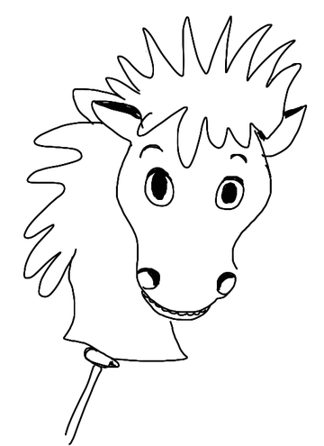
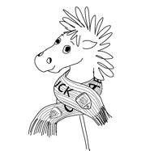
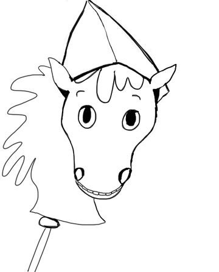

Leitfrage aus dem Unterricht


Hallo!
Lass uns zusammen durch die Geschichte von Osnabrück reiten.


Die Fragen beruhen auf den Arbeitsblättern zur Stadtgeschichte aus dem Sachunterricht einer 4. Klasse und auf den Projektblättern „Osnabrück – Die Friedensstadt“ der Stadt Osnabrück (Inhalt und Konzept: Jana Cordes und Silke Grade, Zeichnungen: Manila Bartnik). Antworten können im eigenen Unterricht etwas anders formuliert sein.
Der Fortschritt wird nur in diesem Browser auf diesem Gerät gespeichert. Wer auf einem anderen Gerät übt, fängt dort von vorn an.